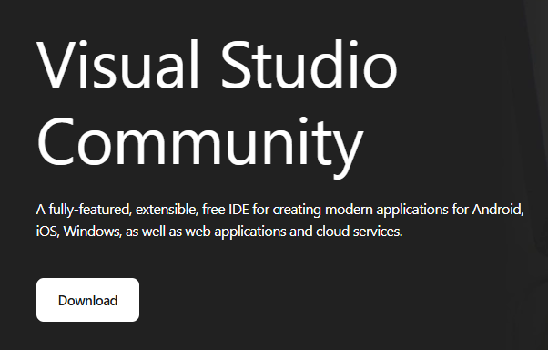
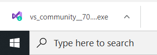
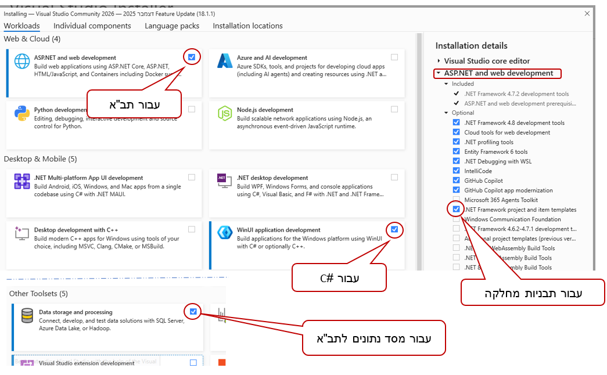
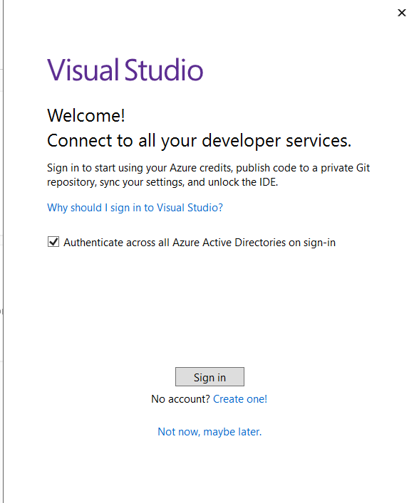

מדריך 0: התקנת Visual Studio 2026
מורידים ומתקינים את התוכנה שבה נבנה את האתר, עם הרכיבים הנכונים
💡 על מה המדריך הזה? לפני שבונים אתר, צריך להתקין את Visual Studio על המחשב. בבית הספר היא כנראה כבר מותקנת. המדריך הזה בשביל המחשב בבית.
מה צריך לפני: מחשב עם Windows, וחיבור לאינטרנט.
מה צריך לפני: מחשב עם Windows, וחיבור לאינטרנט.
⚠️ לפני שמתחילים:
- המחשב חייב להיות מחובר לאינטרנט לאורך כל ההתקנה.
- ההתקנה ארוכה: יכולה לקחת קרוב לשעה. כדאי להתחיל כשיש זמן, ולא לכבות את המחשב באמצע.
- צריך מקום פנוי בדיסק: לפחות 20GB.
1. הורדה
- חפשו בגוגל Visual Studio downloads, או היכנסו ישירות ל-visualstudio.microsoft.com/downloads.
- בחרו ב-Visual Studio Community ולחצו על כפתור ההורדה. זו הגרסה החינמית, והיא כל מה שצריך. (Professional ו-Enterprise הן גרסאות בתשלום.)

- בסיום ההורדה, פתחו את הקובץ שירד (שמו מתחיל ב-
vs_community). אשרו את כל ההודעות שקופצות (למשל "האם לאפשר לאפליקציה לבצע שינויים").
📖 מה הורדנו?
הקובץ הקטן שירד הוא לא Visual Studio עצמה, אלא Visual Studio Installer: תוכנה שמורידה ומתקינה את Visual Studio, ונותנת לבחור אילו חלקים ממנה להתקין. גם בהמשך משתמשים בה כדי לעדכן או להוסיף רכיבים.
2. בחירת רכיבים (Workloads)
📖 מושג: Workload (חבילת עבודה)
Visual Studio יודעת לבנות הרבה סוגים של תוכנות: אתרים, משחקים, אפליקציות לטלפון. לכל סוג יש "חבילה" של כלים, שנקראת Workload. מתקינים רק את מה שצריך, כדי לחסוך מקום וזמן.
אחרי כמה דקות ייפתח חלון עם הלשונית Workloads. סמנו:
| רכיב | איפה בחלון | למה |
|---|---|---|
| ASP.NET and web development | תחת Web & Cloud | חובה. זה מה שמאפשר לבנות אתרי ASP.NET Core MVC. |
| Data storage and processing | למטה, תחת Other Toolsets | מומלץ מאוד. כלים לעבודה עם מסד הנתונים (מדריכים 2 ו-13). |

💡 על התמונה: בתמונה מסומנים גם WinUI application development, וב"Installation details" שבצד גם .NET Framework project and item templates. הם נחוצים לקורסים אחרים בתוכנית (למשל יסודות C#). אם אתם לומדים גם אותם, סמנו גם את אלה. למדריכים באתר הזה מספיקים שני הרכיבים שבטבלה.
- אחרי שסימנתם, לחצו על Install בפינה הימנית התחתונה של החלון.
- עכשיו מתחילה ההתקנה הארוכה. אפשר לעשות דברים אחרים במחשב בינתיים, רק לא לכבות אותו ולא לנתק את האינטרנט.
⚠️ אם בסוף מופיעה הודעה שההתקנה לא הצליחה כי חסרים רכיבים: פתחו את Visual Studio Installer (חפשו אותו בתפריט התחל), ליד Visual Studio לחצו Modify, ואז בחרו Repair.
3. התחברות לחשבון Microsoft
בסוף ההתקנה, Visual Studio תיפתח ותבקש להתחבר:
- לחצו Sign in והתחברו עם חשבון Microsoft.
- אין לכם חשבון? לחצו על Create one! ופתחו חשבון חדש (בחינם).

⚠️ חובה להתחבר! אפשר ללחוץ "Not now, maybe later", אבל בלי התחברות Visual Studio Community תינעל אחרי 30 יום.
Visual Studio נפתחה, ובמסך הפתיחה יש אפשרויות כמו Create a new project ו-Clone a repository. ההתקנה הסתיימה! 🎉
4. כבר מותקנת? בודקים שיש את הרכיב הנכון
אם Visual Studio כבר מותקנת, אבל במדריך 1 לא מוצאים את התבנית ASP.NET Core Web App (Model-View-Controller), כנראה חסר הרכיב:
- פתחו את Visual Studio Installer מתפריט התחל.
- ליד Visual Studio לחצו Modify.
- סמנו ASP.NET and web development (ואם אין, גם Data storage and processing) ולחצו Modify בפינה למטה.
באותו מקום (בכפתור Update, אם הוא מופיע) מעדכנים את Visual Studio לגרסה החדשה ביותר. כדאי לעדכן מדי פעם, ובמיוחד שבבית ובבית הספר תהיה אותה גרסה (מדריך 3).
🔧 אם זה לא עובד
- ההתקנה נתקעת על אותו אחוז הרבה זמן: חלק מהרכיבים גדולים, וזה נורמלי שזה ייקח זמן. אם אחרי שעה לא זז כלום, בדקו את החיבור לאינטרנט ונסו שוב.
- הודעה שאין מספיק מקום: פנו מקום בדיסק, או בלשונית Installation locations בחרו כונן אחר.
- ההתקנה נכשלה: Visual Studio Installer ← Modify ← Repair (סעיף 2).
📌 מה למדנו
- מורידים את Visual Studio Community (החינמית) מ-visualstudio.microsoft.com/downloads.
- חובה לסמן את ASP.NET and web development, ומומלץ גם Data storage and processing.
- מתחברים לחשבון Microsoft, אחרת התוכנה תינעל אחרי 30 יום.
- רכיבים חסרים, תיקון ועדכונים: דרך Visual Studio Installer ← Modify.
השלבים והתמונות במדריך הזה מבוססים על המדריך של הילה קדמן, kadman11.wordpress.com.